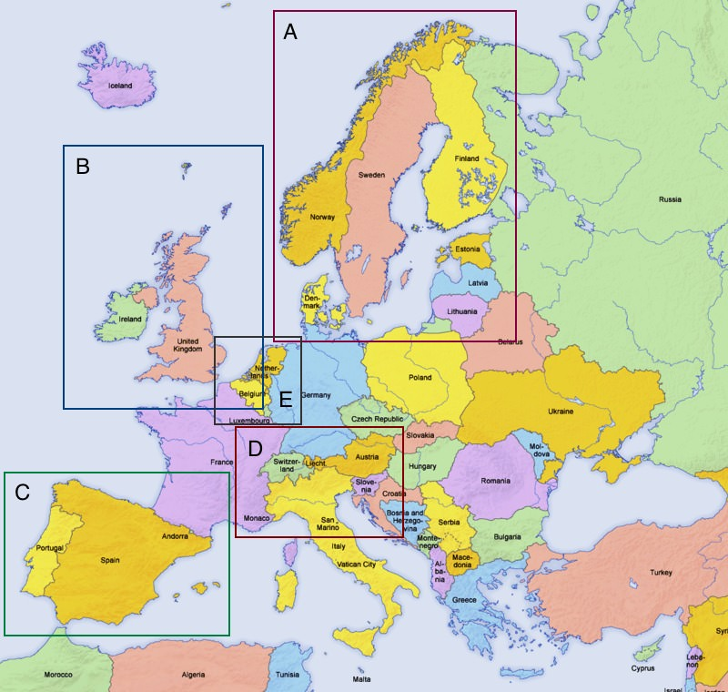
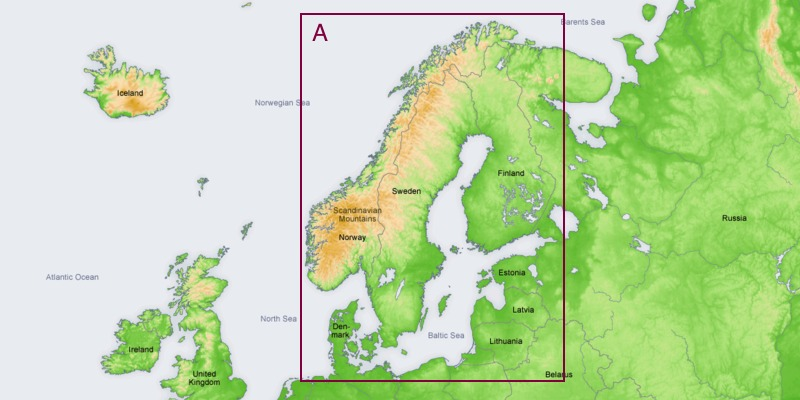
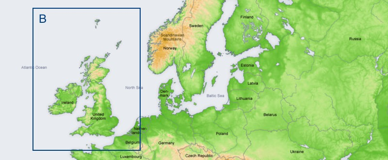
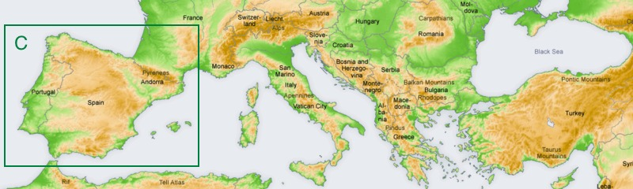
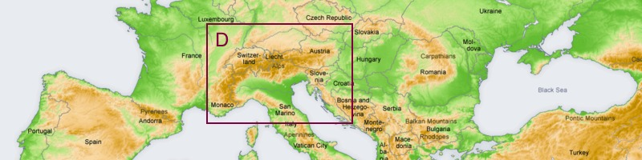
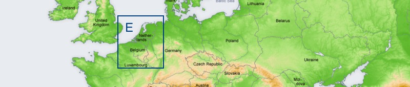

All overview maps on this page: Source Wikipedia
We wish you lots of fun with the Freizeitkarte maps ... and many interesting trips.

A = Denmark (DNK), Norway (NOR), Sweden (SWE), Finland (FIN) [Scandinavian states]
Russian Exclave Kaliningrad, Lithuania (LTU), Latvia (LVA), Estonia (EST) [Baltic states]
Garmin GPS-device: Scandinavian + Baltic States - install image for micro SD card (1.2 GB)Microsoft Windows: Scandinavian + Baltic States - archive for Garmin BaseCamp (1.2 GB)
Apple Mac OS X: Scandinavian + Baltic States - install archive for Garmin BaseCamp (1.2 GB)
Alle operating systems: Scandinavian + Baltic States - image folder for QLandkarte (1.2 GB)

B = United Kingdom (GBR), Ireland (IRL), Faroe Islands (FRO)
Garmin GPS-device: UK + Ireland - install image for micro SD card (1.0 GB)Microsoft Windows: UK + Ireland - archive for Garmin BaseCamp (1.0 GB)
Apple Mac OS X: UK + Ireland - install archive for Garmin BaseCamp (1.0 GB)
Alle operating systems: UK + Ireland - image folder for QLandkarte (1.0 GB)

C = Spain (ESP), Portugal (PRT) [Iberian Peninsula, Pyrenees, Balearics]
Garmin GPS-device: Spain + Portugal - install image for micro SD card (0.8 GB)Microsoft Windows: Spain + Portugal - archive for Garmin BaseCamp (0.8 GB)
Apple Mac OS X: Spain + Portugal - install archive for Garmin BaseCamp (0.8 GB)
Alle operating systems: Spain + Portugal - image folder for QLandkarte (0.8 GB)

D = Switzerland (CHE), Austria (AUT), Slovenia (SVN) [Wider Area Alps]
Garmin GPS-device: Wider Area Alps - install image for micro SD card (1.6 GB)Microsoft Windows: Wider Area Alps - archive for Garmin BaseCamp (1.6 GB)
Apple Mac OS X: Wider Area Alps - install archive for Garmin BaseCamp (1.6 GB)
Alle operating systems: Wider Area Alps - image folder for QLandkarte (1.6 GB)

E = Belgium (BEL), Netherlands (NLD), Luxembourg (LUX) [BeNeLux States]
Garmin GPS-device: BeNeLux States - install image for micro SD card (1.0 GB)Microsoft Windows: BeNeLux States - archive for Garmin BaseCamp (1.0 GB)
Apple Mac OS X: BeNeLux States - install archive for Garmin BaseCamp (1.0 GB)
Alle operating systems: BeNeLux States - image folder for QLandkarte (1.0 GB)